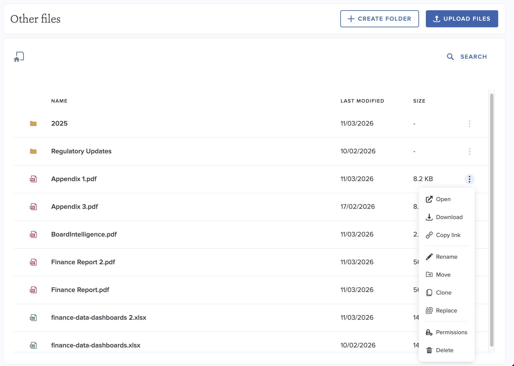
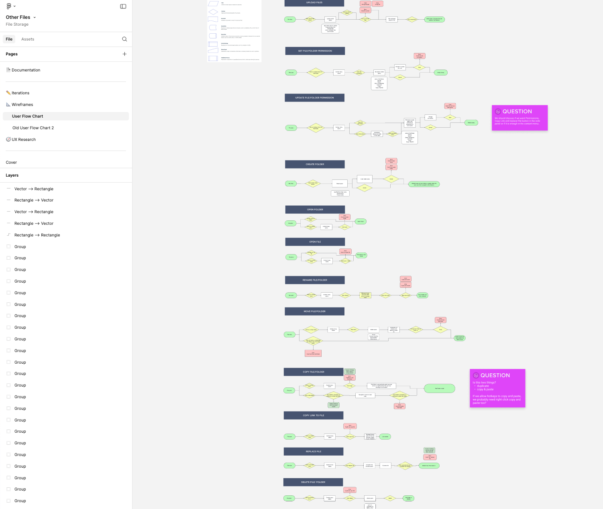
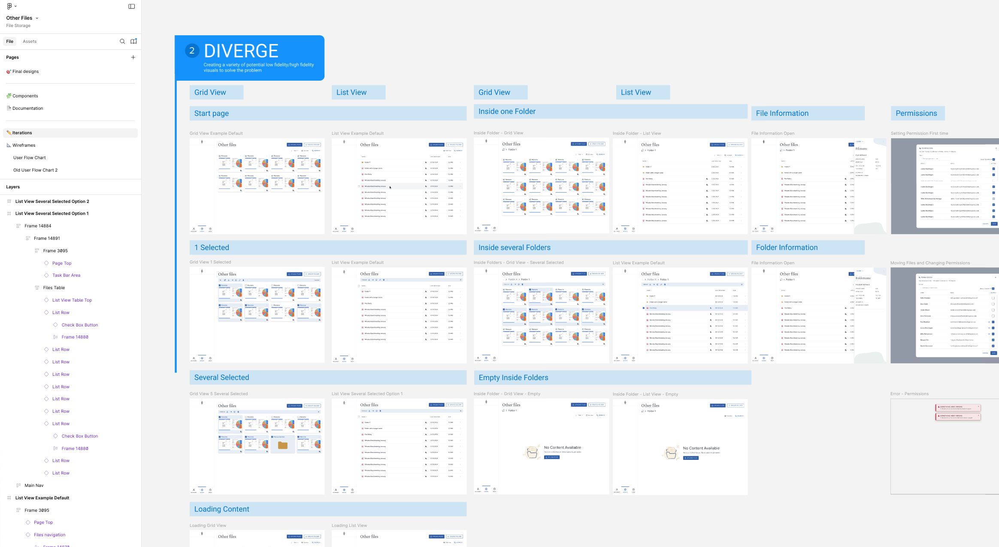
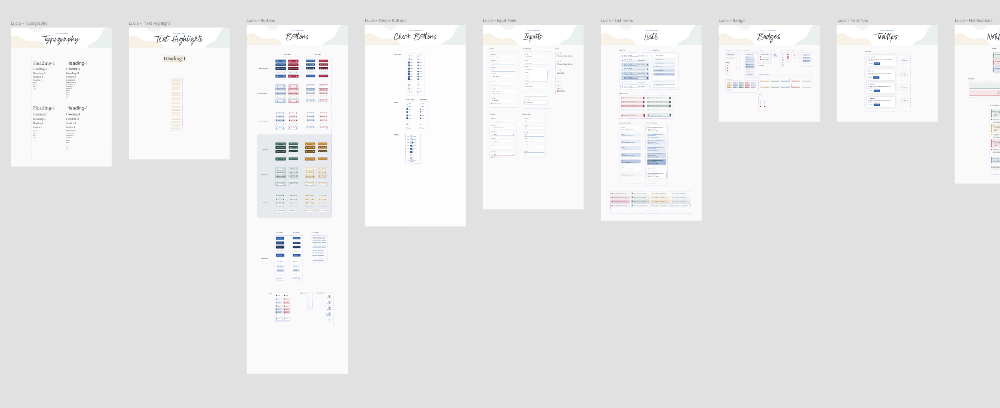
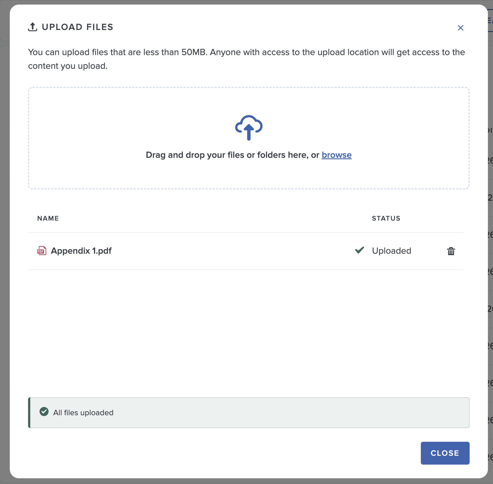

Other Files
Challenge
Many clients relied on the ability to upload and store files in their portal without attaching them to a meeting. These documents were typically used as reference materials such as policies, archived documents, or supporting information that needed to remain accessible but separate from formal meeting packs.
During the migration to a new platform, this capability did not exist. Removing it risked disrupting established workflows and creating friction during migration.
The challenge was to design a flexible document space that allowed users to store and manage files independently of meetings while integrating seamlessly with the existing platform structure.
The goal was to close this functional gap while establishing a scalable foundation for document management that could support future platform capabilities.
My Role
Product Designer responsible for discovery, interaction design, and high fidelity prototyping. I worked closely with product managers and engineers to define requirements, design the file hierarchy and permission model, and deliver production ready designs for the web application and document reader.
Process
Define: The project began with discovery sessions across product, design, and engineering to understand the underlying use cases and technical constraints. Two core needs emerged: storing reference materials and managing documents related to meetings that should not appear in meeting packs. These insights were translated into user flows, functional requirements, and permission rules that balanced flexibility with platform consistency.
Ideate: We introduced the concept of Other Files, a dedicated document space outside the meeting structure. Early exploration focused on how users could manage hierarchical content, maintain clear ownership of structure, and control access through inherited permissions. Particular attention was placed on ensuring the feature aligned with existing platform patterns while remaining simple for both managers and readers.
Prototype: High fidelity prototypes were created in Figma to define the full document management experience, including file uploads, folder creation, drag and drop organization, and contextual file actions. The interaction model was intentionally familiar, drawing on established file management patterns while integrating with the platform’s design system and permission framework.
Test: Internal usability testing was conducted on early prototypes to validate key workflows such as uploading content, reorganizing files, replacing documents, and managing permissions. These sessions helped identify areas where hierarchy, context, and access rules required clearer communication in the interface.
Iterate: Design iterations focused on improving permission inheritance clarity, reducing ambiguity when moving files between folders, and strengthening contextual cues within the file hierarchy. The experience was also extended into the platform’s Web Reader, ensuring files stored in Other Files could be opened, read, and annotated using the same document viewing environment as meeting packs.
Delivery & Impact
The project introduced Other Files, a dedicated document management space that enables users to upload, organize, and access files outside of meetings.
Migration Enablement: By restoring a critical workflow from the previous platform, the feature removed a key migration blocker and reduced the risk of churn during client onboarding.
Flexible Document Management: Users can create structured folder hierarchies, upload files in bulk, and manage reference materials independently from meetings while maintaining clear organization and discoverability.
Integrated Document Experience: Files stored in Other Files can be opened directly in the platform’s Web Reader, allowing users to read, annotate, and export documents within the same interface used for meeting packs.
Granular Access Control: The solution introduced a permission model based on inherited access rules, enabling managers to securely control visibility at both folder and file level while keeping the system manageable for administrators.
Platform Foundation: Beyond solving the immediate migration need, the feature established a scalable structure for future capabilities such as cross platform search, expanded file type support, and richer document management functionality.



